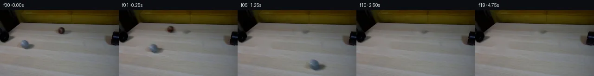

![首帧]()

Round 00
2026-11-05T10:47:52.227007+00:00像素候选变化代码 +202/−0inspection 更新
pixels bfdfc37b94cf610a · code bd3633a9eec9ecbe
查看本轮 generate.py 真实 diff
--- previous/generate.py
+++ current/generate.py
@@ -0,0 +1,202 @@
+#!/usr/bin/env python3
+"""Generate the 20-frame PixelWorld continuation using local pixel operations."""
+
+from pathlib import Path
+
+import cv2
+import numpy as np
+from PIL import Image, ImageDraw
+
+import artifact_io
+
+
+ROOT = Path(__file__).resolve().parent
+W, H = 256, 144
+
+
+def ellipse_mask(center, radii, blur=2.0):
+ """Return a soft float mask for a filled ellipse."""
+ mask = np.zeros((H, W), np.uint8)
+ cv2.ellipse(
+ mask,
+ (int(round(center[0])), int(round(center[1]))),
+ (int(round(radii[0])), int(round(radii[1]))),
+ 0,
+ 0,
+ 360,
+ 255,
+ -1,
+ lineType=cv2.LINE_AA,
+ )
+ if blur:
+ mask = cv2.GaussianBlur(mask, (0, 0), blur)
+ return mask.astype(np.float32) / 255.0
+
+
+def make_clean_plate(source):
+ """Remove the two original balls/shadows, retaining surrounding wood."""
+ hard = np.zeros((H, W), np.uint8)
+ # Include the complete soft contact shadows as well as the spherical bodies.
+ cv2.ellipse(hard, (57, 77), (22, 13), 0, 0, 360, 255, -1)
+ cv2.ellipse(hard, (133, 46), (14, 11), 0, 0, 360, 255, -1)
+ # Navier-Stokes inpainting follows the fine horizontal grain more cleanly here.
+ return cv2.inpaint(source, hard, 4.0, cv2.INPAINT_NS)
+
+
+def affine_delta(delta, alpha, source_center, target_center, scale, velocity):
+ """Translate/scale a source-object residual with short exposure blur."""
+ out = np.zeros_like(delta, dtype=np.float32)
+ # Five exposure samples, biased toward the current (leading) position.
+ fractions = np.array([-0.24, -0.16, -0.09, -0.035, 0.0], np.float32)
+ weights = np.array([0.08, 0.13, 0.19, 0.25, 0.35], np.float32)
+ cx, cy = source_center
+ for frac, weight in zip(fractions, weights):
+ tx = target_center[0] + frac * velocity[0]
+ ty = target_center[1] + frac * velocity[1]
+ mat = np.array(
+ [[scale, 0.0, tx - scale * cx], [0.0, scale, ty - scale * cy]],
+ dtype=np.float32,
+ )
+ warped_delta = cv2.warpAffine(
+ delta * alpha[..., None],
+ mat,
+ (W, H),
+ flags=cv2.INTER_CUBIC,
+ borderMode=cv2.BORDER_CONSTANT,
+ borderValue=0,
+ )
+ out += weight * warped_delta
+ return out
+
+
+def seam_overlay(frame, center, radius, phase, color, opacity=0.28):
+ """Add a subtle rotating curved tennis-ball seam without moving the highlight."""
+ if center[0] < -radius or center[0] > W + radius or center[1] < -radius or center[1] > H + radius:
+ return frame
+ scale = 4
+ pad = int(np.ceil(radius * 1.8)) + 3
+ size = 2 * pad + 1
+ layer = Image.new("RGBA", (size * scale, size * scale), (0, 0, 0, 0))
+ draw = ImageDraw.Draw(layer, "RGBA")
+ # Two complementary projected arcs. Phase changes their apparent slant each frame.
+ angle = phase
+ rx = radius * 0.72 * scale
+ ry = radius * (0.40 + 0.12 * np.cos(angle)) * scale
+ pc = pad * scale
+ bbox = (pc - rx, pc - ry, pc + rx, pc + ry)
+ start = float(25 + np.degrees(angle) % 180)
… diff truncated; 115 more lines …